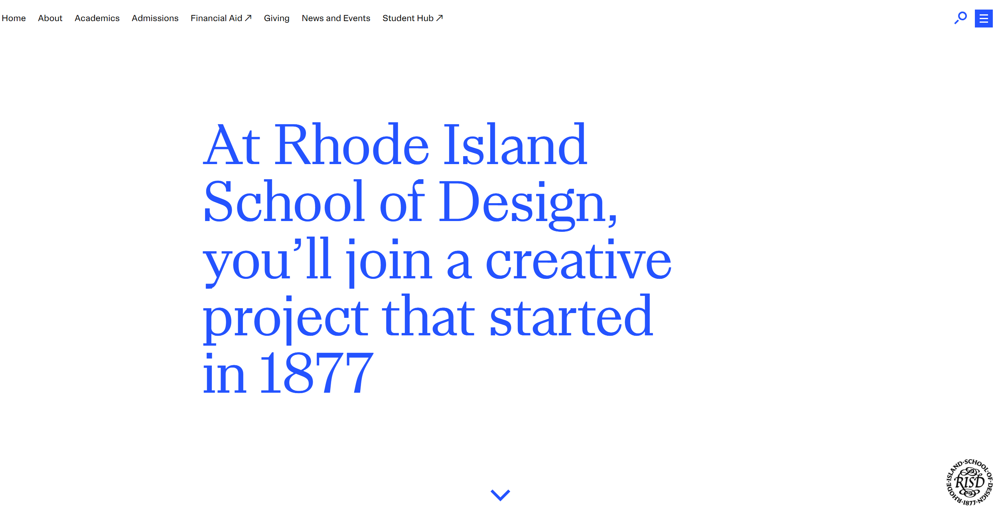

Rhode Island School of Design (RISD)
The website uses a hierarchical structure with a clear top navigation menu. The homepage acts as a central hub linking to sections like Undergraduate, Graduate, Admissions, and the RISD Museum. Content is grouped into categories such as programs, events, and stories.
Contrast: The site uses large, bold typography and strong visual contrast between text and background images to highlight important content.
The audit score for the Rhode Island School of Design is 71 out of 100. I would say it is a nice score for the website.
Yes, the site is very effective. It provides clear navigation and calls to action such as "Apply" and "Explore Programs," helping users find information and complete tasks accurately.
In most of the cases, yes. The navigation is simple and information is easy to find within a few clicks. However, large images may slightly slow down the experience, images tend to be very large, even on desktop view.
The site is highly engaging as you move your way around the website. It uses strong visuals, student artwork, and storytelling, making it visually appealing and appropriate for an art and design school.
To improve the website, RISD could enhance accessibility by adding more text alternatives for images and ensuring strong color contrast, some images are good for the content. Providing more quick-read summaries would also help users find information faster.
Google fonts:
https://fonts.google.com/specimen/Erica+One?preview.script=Latn
